工作线程是否够用
查看 /vars/bthread_worker_count 和 /vars/bthread_worker_usage，分别是工作线程的个数和正在被使用的工作线程个数。如果 usage 和 count 接近，说明线程不够用了。
比如，下图中有 24 个工作线程，正在使用的是 23.93 个，说明所有的工作线程都被打满了，不够用了：
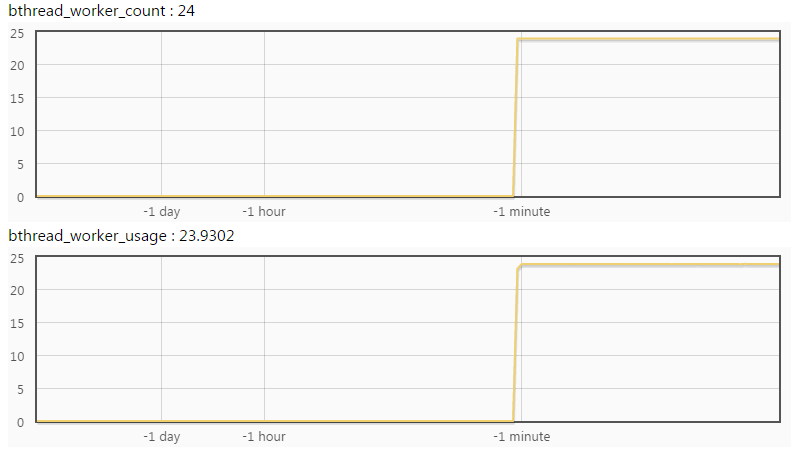
下图中正在使用的只有 2.36 个，工作线程明显是足够的：
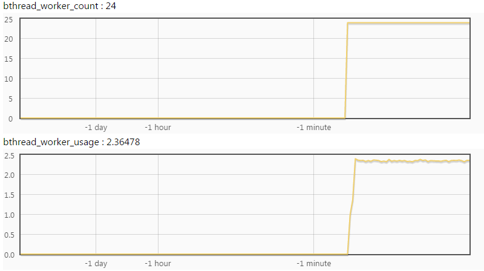
把 /vars/bthread_worker_count;bthread_worker_usage?expand 拼在服务 url 后，可以直接看到这两幅图。
CPU 是否够用
查看 /vars/system_core_count 和 /vars/process_cpu_usage，分别是 cpu 核心的个数和正在使用的 cpu 核数。如果 usage 和 count 接近，说明 CPU 不够用了。
下图中 cpu 核数为 24，正在使用的核心数是 20.9 个，CPU 是瓶颈了：
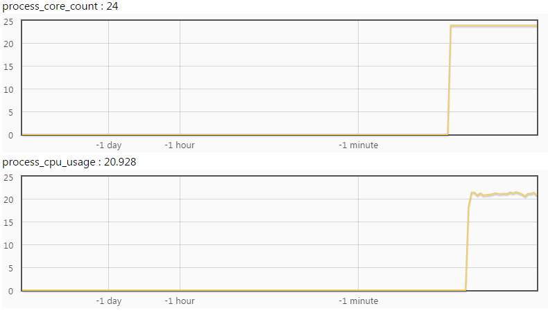
下图中正在使用的核心数是 2.06，CPU 是够用的：
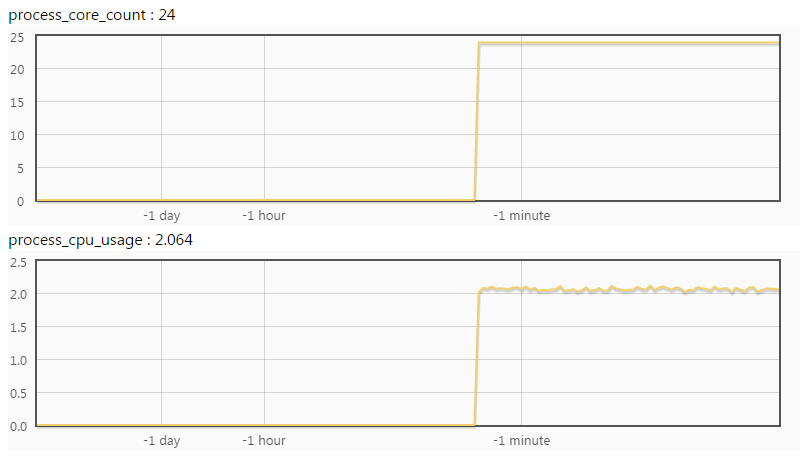
如果 process_cpu_usage 和 bthread_worker_usage 接近，说明是 cpu-bound，工作线程大部分时间在做计算；如果 process_cpu_usage 明显小于 bthread_worker_usage，说明是 io-bound，工作线程大部分时间在阻塞。
1 - process_cpu_usage / bthread_worker_usage 就是大约在阻塞上花费的时间比例。比如 process_cpu_usage = 2.4，bthread_worker_usage = 18.5，那么工作线程大约花费了 87.1% 的时间在阻塞上。
上游分流是否均匀
原因可能是单机性能不足，或上游分流不均。
在不同服务的 vars 界面输入 qps，查看不同的 qps 是否符合预期：
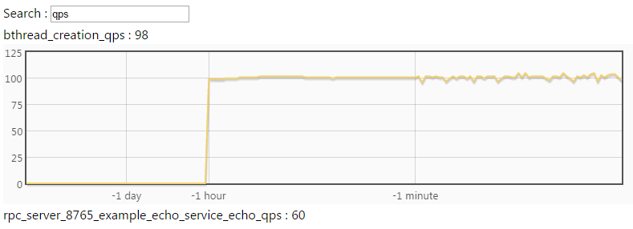
或者在命令行中用 curl 直接访问：
$ curl brpc.baidu.com:8765/vars/*qps*
bthread_creation_qps : 95
rpc_server_8765_example_echo_service_echo_qps : 57如果不同机器的分流确实不均，且难以解决，可以考虑限制最大并发。
定位 CPU 热点
请使用 CPU profiler 分析程序的热点，用数据驱动优化。一般来说，一个卡顿的 cpu-bound 程序一般能看到显著的热点。
工作线程阻塞在什么地方
如果阻塞无法避免，考虑用异步。
如果线程数不够，你可以尝试动态调大工作线程数：切换到 /flags 页面，点击 bthread_concurrency 右边的 (R)：
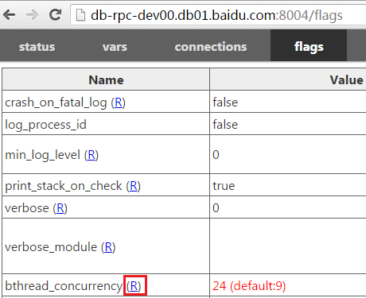
进入后填入新的线程数确认即可：
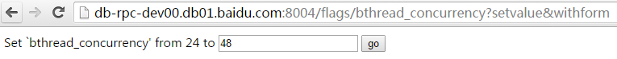
回到 /flags 界面可以看到 bthread_concurrency 已变成了新值：
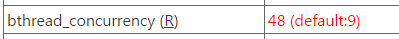
不过，调大线程数未必有用。如果工作线程是由于访问下游而大量阻塞，调大工作线程数是没有用的，因为真正的瓶颈在于后端，调大线程后只是让每个线程的阻塞时间变得更长。
比如在我们这个例子中，调大线程后新增的工作线程仍然被打满了：
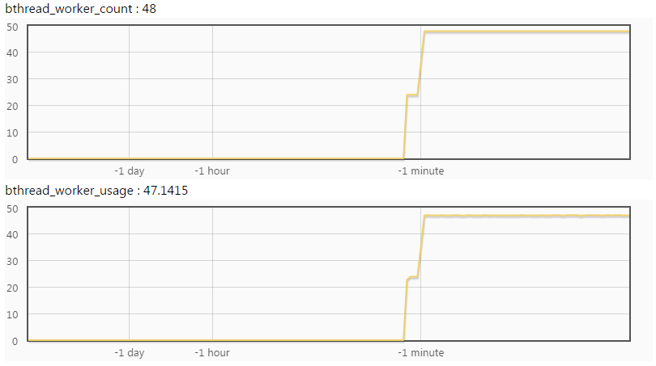
如果程序被某把锁挡住了，也可能呈现出”io-bound”的特征。先用 contention profiler 排查锁的竞争状况。
用 rpcz 观察请求
rpcz 可以帮助你看到最近的所有请求，和处理它们时在每个阶段花费的时间（单位都是微秒）：
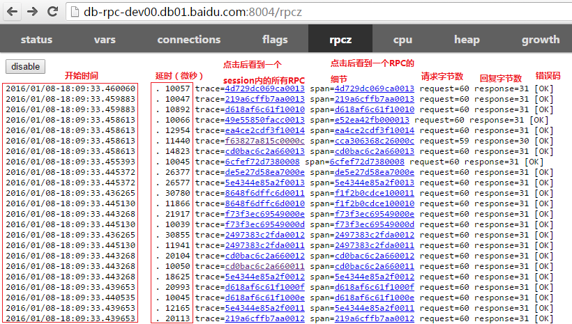
点击一个 span 链接后看到该次 RPC 何时开始，每个阶段花费的时间，何时结束：
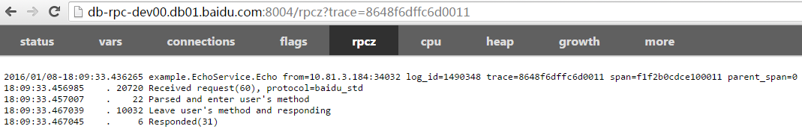
这是一个典型的 server 在严重阻塞的例子：从接收到请求到开始运行花费了 20ms，说明 server 已经没有足够的工作线程来及时完成工作了。
现在这个 span 的信息比较少，我们去程序里加一些。你可以使用 TRACEPRINTF 向 rpcz 打印日志，打印内容会嵌入在 rpcz 的时间流中：
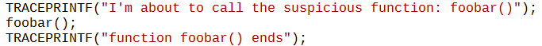
重新运行后，查看一个 span，里面的打印内容果然包含了我们增加的 TRACEPRINTF：
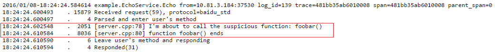
在运行到第一条 TRACEPRINTF 前，用户回调已运行了 2051 微秒（假设这符合我们的预期），紧接着 foobar() 却花费了 8036 微秒，我们本来以为这个函数会很快返回的。范围进一步缩小了。
重复这个过程，直到找到那个造成问题的函数。
用 bvar 统计函数耗时
TRACEPRINTF 主要适合若干次的函数调用。如果一个函数调用了很多次，或者函数本身开销很小，每次都往 rpcz 打印日志是不合适的。这时候你可以使用 bvar。
bvar 是一个多线程下的计数库，可以以极低的开销统计用户递来的数值，相比”打日志大法”几乎不影响程序行为。你不用完全了解 bvar 的完整用法，只要使用 bvar::LatencyRecorder 即可。
仿照如下代码对 foobar 的运行时间进行监控：
#include <butil/time.h>
#include <bvar/bvar.h>
bvar::LatencyRecorder g_foobar_latency("foobar");
...
void search() {
...
butil::Timer tm;
tm.start();
foobar();
tm.stop();
g_foobar_latency << tm.u_elapsed();
...
}重新运行程序后，在 vars 的搜索框中键入 foobar，显示如下：
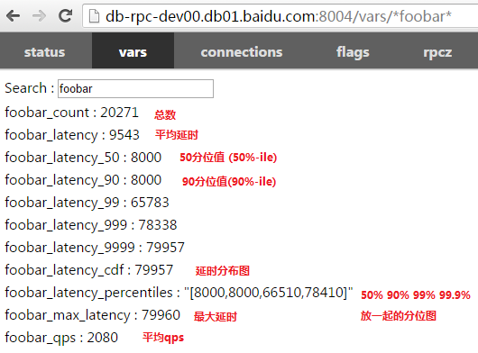
点击一个 bvar 可以看到动态图，比如点击 cdf 后看到：
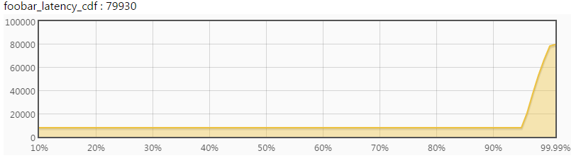
根据延时的分布，你可以推测出这个函数的整体行为，对大多数请求表现如何，对长尾表现如何。
你可以在子函数中继续这个过程，增加更多 bvar，并比对不同的分布，最后定位来源。
没有内置服务时
以上调试手段依赖 brpc 的内置服务。如果你的程序中没有使用 brpc server，得打开 dummy server 提供内置服务。